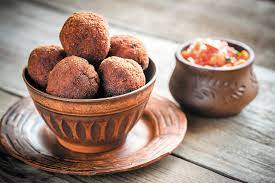

Almôndega

Ingredientes
- 500 g de carne moída
- 1/2 cebola ralada ou picadinha
- 4 dentes de alho picadinho
- 2 1/2 colheres (sopa) de farinha de aveia
- 1 colher (sopa) de chia
- 1 cenoura (média) ralada bem fina
- Sal e pimenta QB
Modo de preparo
- Misturar bem todos os ingredientes com as mãos, mas sem amassar demais, apenas o suficiente para homogeneizar.
- Modelar bolinhas não muito grandes.
- Grelhar em uma frigideira ou panela grande até as almôndegas ficarem douradinhas, ou assar no forno.
Observação
Servir com molho de tomate.